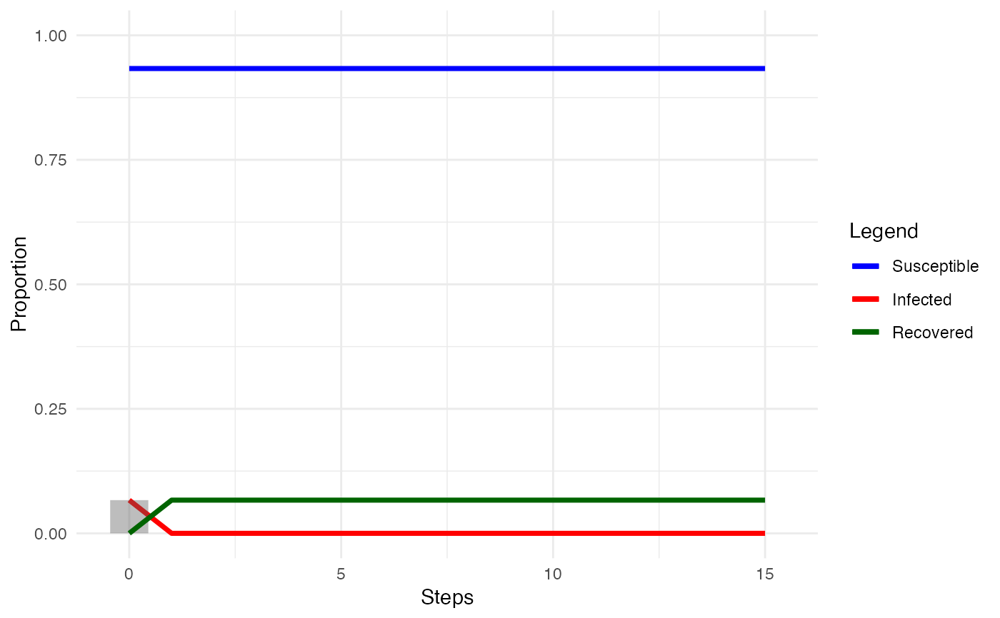

Functions to measure diffusion processes on networks
network_transmissibility(diff_model)
network_infection_length(diff_model)
network_reproduction(diff_model)
node_adoption_time(diff_model)
node_adopter(diff_model)
node_thresholds(diff_model)
node_infection_length(diff_model)A valid network diffusion model.
network_transmissibility(): Calculates the average transmissibility observed
in a diffusion simulation, or the number of new infections over
the number of susceptible, over the number of infected
network_infection_length(): Calculates the average length nodes remain
infected in a compartmental model with recovery for the network as a whole
network_reproduction(): Calculates the observed reproductive number
in a diffusion simulation as the network's transmissibility over
the network's average infection length
node_adoption_time(): Measures nodes' time of adoption/infection
node_adopter(): Classifies membership of nodes into diffusion categories
node_thresholds(): Measures nodes' thresholds from the amount
of exposure they had when they became infected
node_infection_length(): Measures the average length nodes that become
infected remain infected in a compartmental model with recovery
Kermack, W. and McKendrick, A., 1927. "A contribution to the mathematical theory of epidemics". Proc. R. Soc. London A 115: 700-721.
Valente, Tom W. (1995). Network models of the diffusion of innovations (2nd ed.). Cresskill N.J.: Hampton Press.
Other measures:
between_centrality,
close_centrality,
closure,
cohesion(),
degree_centrality,
eigenv_centrality,
features,
heterogeneity,
hierarchy,
holes
smeg <- manynet::generate_smallworld(15, 0.025)
smeg_diff <- play_diffusion(smeg, recovery = 0.05)
plot(smeg_diff)

(adopts <- node_adopter(smeg_diff))
#> V1
#> 1 NA
summary(adopts)
summary(node_adoption_time(smeg_diff), membership = adopts)
#> <NA>
#> NA
summary(node_thresholds(smeg_diff), membership = adopts)
#> <NA>
#> NA
summary(node_infection_length(smeg_diff))
#> Minimum Maximum Mean StdDev Missing
#> 1 1 1 NA 14